El tiempo es una sombra
|
|
|
El tiempo es una sombra |
Solar Info |
||
| 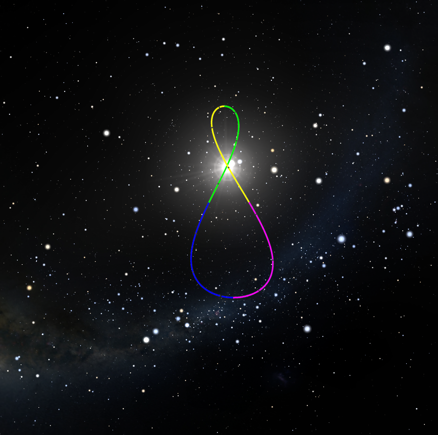 |

|
|
La aplicación Solar Info proporciona información sobre el movimiento diurno y la posición del sol a lo largo del año, que facilita la comprensión de fenómenos que, a pesar de sernos familiares, a veces no entendemos del todo. Resulta una útil herramienta para la instalación y ajuste de relojes de sol al proporcionar la hora solar calculada con precisión con algoritmos astronómicos. Por otra parte proporciona información sobre el movimiento diurno y la posición del sol a lo largo del año, que facilita la comprensión de fenómenos que, a pesar de sernos familiares, a veces no entendemos del todo. La hora solar se actualiza automáticamente y de forma manual al pulsar sobre cualquier parte del widget. Al pulsar sobre el icono situado en el borde superior derecho se accede al menú de la aplicación.
En el apartado Localización se obtienen las coordenadas del emplazamiento automáticamente o se puede introducir la Latitud y la Longitud manualmente. Se pueden configurar los widget para que periodicamente cada hora actualicen su posición. Hay que tener en cuenta que tanto la hora como la Zona Horaria (TZO) se obtienen del dispositivo por tanto si se introducen manualmente coordenadas muy alejadas de la Zona Horaria, se obtendrán datos erróneos. Si el dispositivo está configurado para ajustar la hora automáticamente, la precisión obtenida puede ser del orden de ±5 segundos.
|
 |
El widget se coloca en cualquier pantalla de inicio. Muestra la hora solar en el emplazamiento, las horas de salida y puesta de sol y su posición en el cielo. |
| 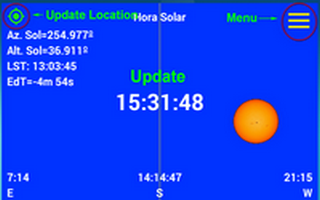 | Pulsando en cualquier parte del widget, se actualiza la hora solar. Pulsando en la esquina superior derecha se accede al menú. El simbolo de la esquina superior izquierda indica si la posición se actualiza periodicamente. Pulsando en él, se actualizan las coordenadas del widget. |
| 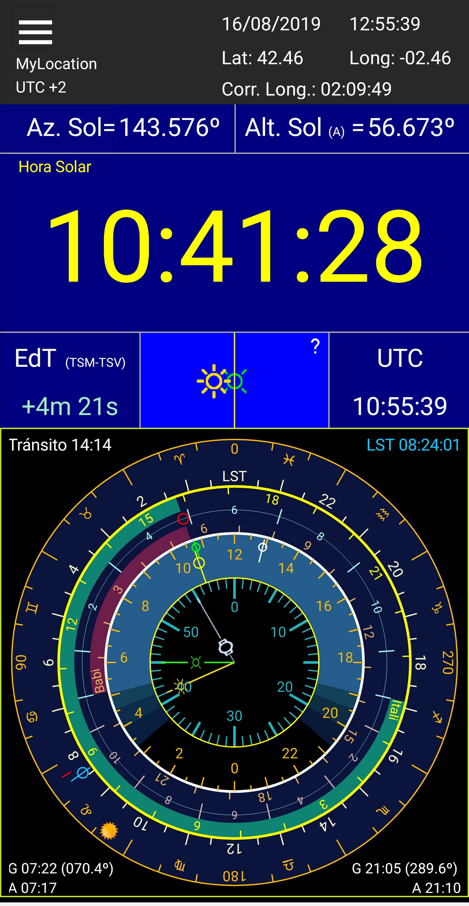 | Pantalla de inicio |
| 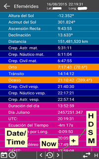 | En esta pantalla se muestran las efemérides precisas del Sol en ese instante. En el panel inferior, pulsando en el botón central se actualizan las efemérides y pulsando en los que se encuentran a su lado se calculan incrementando el tiempo en una hora, un día, una semana o un mes dependiendo de lo seleccionado en el botón de la derecha. La selección de este botón irá alternandose en las sucesivas pulsaciones. |
| 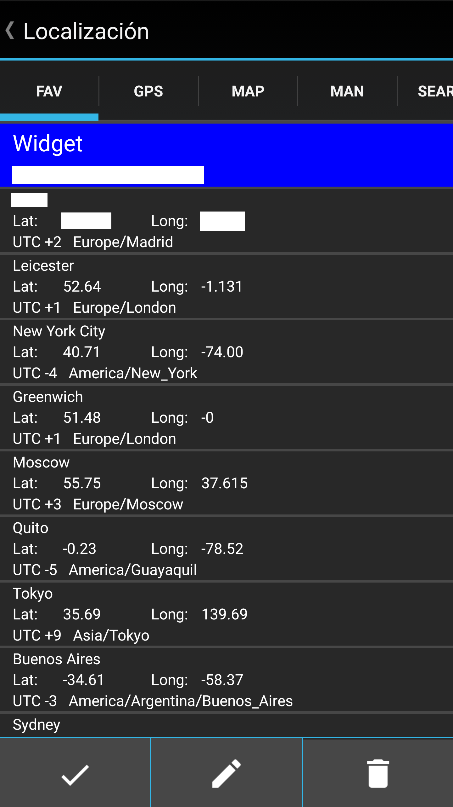 | La hora solar depende de las coordenadas del emplazamiento. Estas se pueden obtener con el GPS, introduciendolas manualmente, desde el mapa o desde una base de datos con más de 15.000 ciudades de todo el mundo
|
| 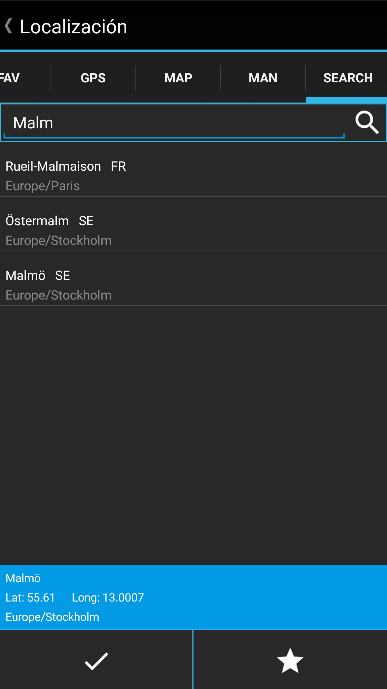 | |
| 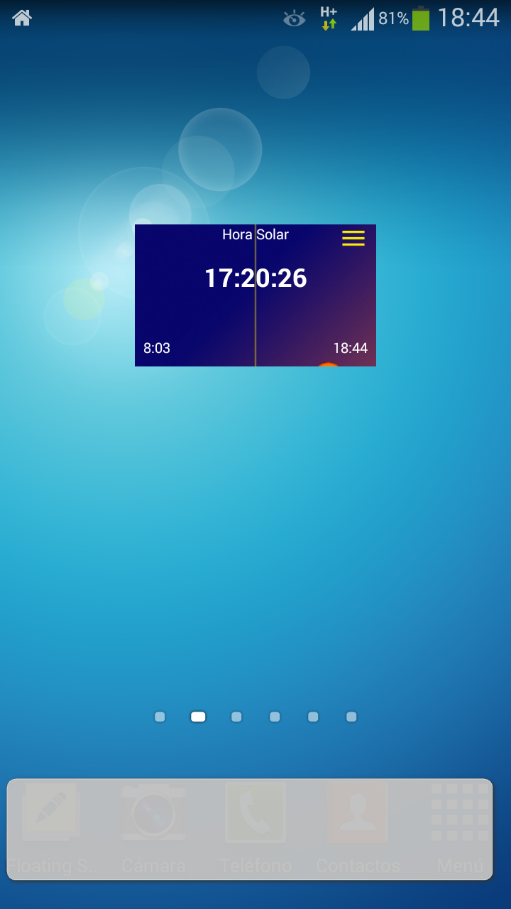 | El aspecto del cielo cambia a lo largo del día, mostrando si nos encontramos durante el día, en el orto u ocaso, durante los crepúculos civil o nautico o en la noche. |
| 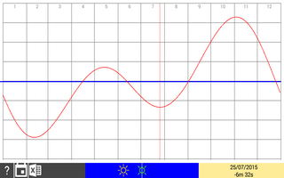 | Puede verse el gráfico de la Ecuación del Tiempo como función del valor del sol verdadero menos el sol medio. El dibujo central inferior muestra la posición relativa de los dos soles. Los valores del gráfico pueden exportarse a un fichero Excel. |
| 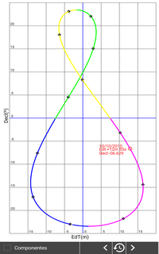 | Se muestra un gráfico del analema anual pudiendo ver los valores de la declinación y la Ecuación del Tiempo día a día. |
| 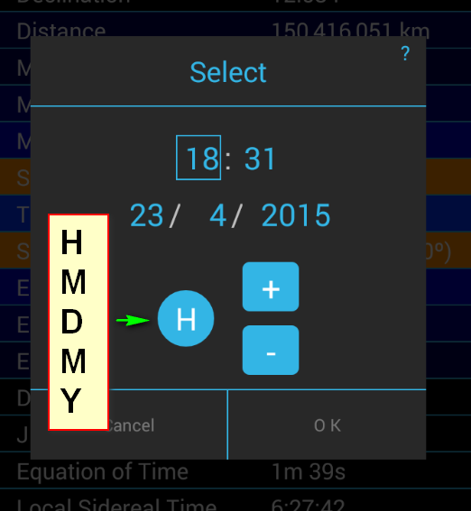 | |
| 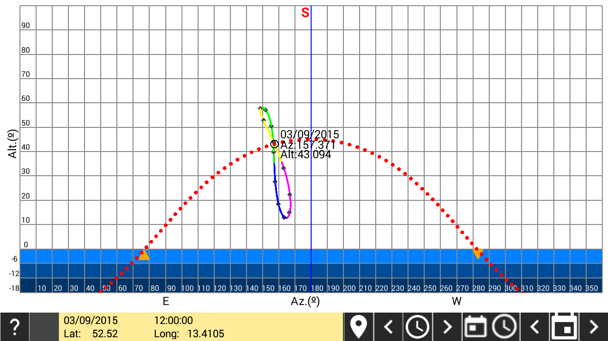 | Puede verse la trayectoria diurna del Sol junto con el analema horario. Tanto la fecha como la hora del analema puede modificarse. |
| 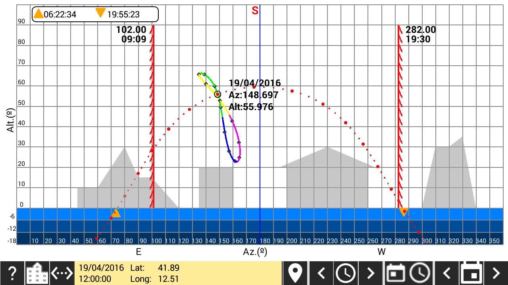 | A la trayectoria diurna se puede superponer una máscara de horizonte del emplazamiento y los límites de funcionamiento para un cuadrante horizontal o vertical declinante. Para construir un dispositivo para dibujar la máscara de horizonte, visitar el siguiente enlace |